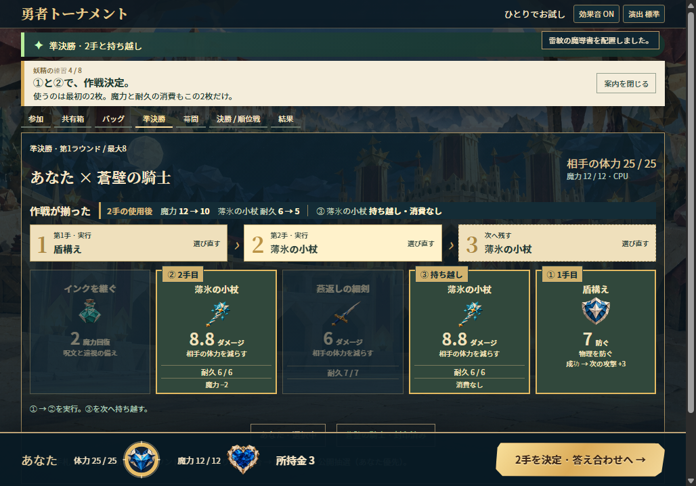
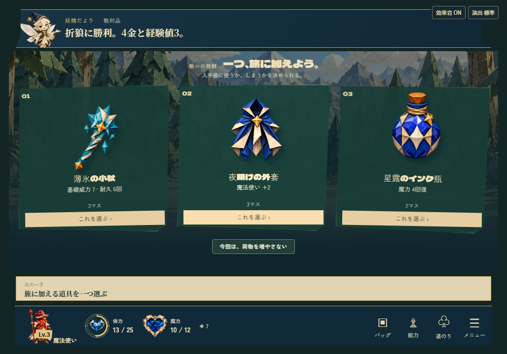
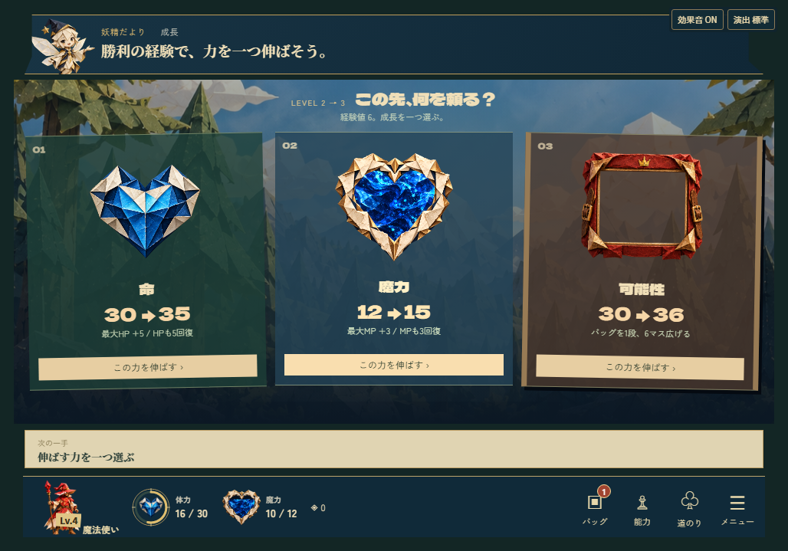

← 勇者トーナメントの案内2026年11月4日
r14 · 実Windowsで表示確認
手札と選択肢を、ひと目で比べやすく。
r14で、手札5枚の情報と、報酬・成長それぞれ3候補の比較表示を改善しました。配布用Windows版をWebView2で動かした、1028×719pxの実記録です。
このページは静的な3画面のギャラリーです。テストプレイはできず、操作の手触りや効果音もここでは確認できません。
手札5枚を、下まで読める
カードの名前・絵・威力・魔力・耐久と、①②③の選択状態を表示。5枚の情報を固定フッターより上へ収めました。

報酬3候補を、絵と効果で比べる
薄氷の小杖・夜明けの外套・星露のインク瓶。3品の絵、名前、効果、使うマス数、選択ボタンを同じ画面に表示しました。

成長3候補の、増える量が見える
命30→35、魔力12→15、バッグ30→36。絵と増加量、回復や拡張の効果、選択ボタンをまとめて比べられます。
